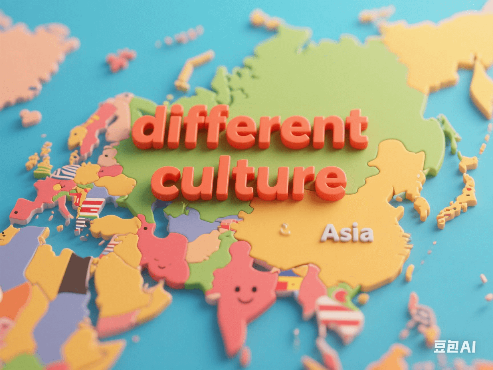

Impact of Cultural Differences on Long - Term Care: Differences between Asia and Europe - America
PeaceLove.Top Insights :2025-04-13
Long - term care is an important part of the social security system. There are significant differences in the ways and concepts of elderly care in different cultural backgrounds. Especially in Asian and European - American countries, cultural values, family structures, and social expectations have a profound impact on elderly care. This article will explore the different impacts of these cultural differences on the long - term care system, reveal their respective advantages and disadvantages, and use emojis to add fun and make the reading experience more vivid.
🌏 Family Care Model in East Asian Culture
🏠 Pressure from the Concept of Family Obligation
In East Asia (such as China, South Korea, Japan, etc.), the concept of family obligation is very strong, especially in the care of the elderly. Traditionally, the elderly usually rely on family members, especially children, to provide daily care. This cultural concept is regarded as an act of repaying parents and an embodiment of filial piety. However, with the advancement of modernization, many families are facing great pressure in caring for the elderly. This involves not only time and financial expenditure but also emotional stress. In South Korea, there is even a social phenomenon called the 'filial piety tax', which refers to some young people bearing economic and psychological pressure from their parents or society in order to fulfill family responsibilities, and some even fall into economic difficulties as a result.
💡 Advantages and Disadvantages
- Advantages: The elderly can enjoy warm family care, reducing their sense of loneliness, and the care is more personalized.
- Disadvantages: Family members are under great pressure, making it difficult to ensure the quality of care. In some cases, the health of the elderly may deteriorate due to the lack of professional care.
🌍 Institutional Care Model in European - American Culture
🏥 Individualism and the Popularity of Institutional Care
Different from the family care model in East Asian countries, European - American countries (such as the United States, the United Kingdom, Canada, etc.) generally follow an individualistic culture, emphasizing personal responsibility and independence. In these countries, institutional care such as nursing homes or professional care institutions is a more common choice. The social welfare system is relatively complete, and many elderly people choose to hand over the care work to professional institutions rather than relying on family members. Although this model can relieve the care burden on family members, it causes problems of loneliness and emotional alienation. Although the elderly in care institutions are accompanied by professional caregivers, they have less contact with their families and friends, so they often feel lonely and abandoned.
💡 Advantages and Disadvantages
- Advantages: The quality of professional care is relatively high. Caregivers are well - trained and can provide all - round care services for the elderly.
- Disadvantages: The elderly are prone to feeling lonely and neglected, and the emotional connection between family members and the elderly may weaken, lacking the company of family affection.
🔍 Summary of Cultural Differences: Weighing the Two Models
From the perspective of cultural differences, the practices of East Asia and Europe - America in long - term care have their own advantages and disadvantages.
🏡 East Asian Family Care Model
- Advantages: Family support allows the elderly to receive emotional care, reducing loneliness and enabling more intimate interactions.
- Challenges: Family members face care pressure, which may affect their physical and mental health and even the harmony of family relationships.
🏢 European - American Institutional Care Model
- Advantages: Institutions provide professional care, relieving the family burden, and the elderly can enjoy high - quality medical services and daily care.
- Challenges: The elderly face the problem of loneliness, lacking family affection and having their emotional needs difficult to be fully met.
👨👩👧👦 Future Trends: Integration and Innovation
With the deepening of globalization and the change of social structure, a single care model no longer meets the needs of all countries and regions. East Asian countries are gradually realizing the necessity of professional institutions, and many countries are gradually introducing professional elderly care services. European - American countries are also beginning to pay attention to the emotional needs of the elderly and strengthening the mechanism of family participation. The hybrid model seems to be the future development trend: combining the advantages of family care and institutional care, using technological means (such as remote monitoring, intelligent care equipment, etc.) to relieve the burden on family members, and ensuring the comprehensive care of the elderly's emotional and physical health.
📝 Conclusion
The impact of culture on long - term care is profound and complex. The East Asian concept of family obligation and the European - American institutional care model have their own advantages and disadvantages, and the most appropriate choice needs to be made according to the actual situation of society, family, and individuals. Whether it is family care or institutional care, the most important thing is to ensure that the elderly can receive warm, caring, and professional care, making their later years more fulfilling and happy. 👴👵 In today's globalized world, how to balance traditional culture and modern care concepts will be an important issue in the global elderly care problem.